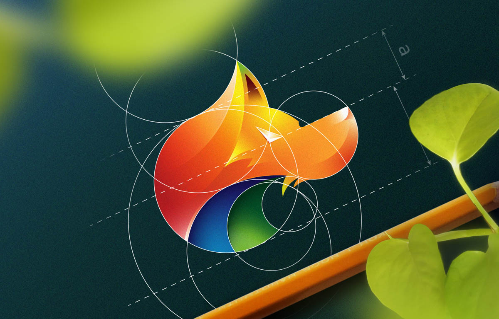

قاعدة الألوان
ما هي دائرة الألوان تُسمى دائرة الألوان بعجلة الألوان أيضاً، وتُعرّف على أنها حلقة دائرية تكون على شكل مُخططٍ يصف العلاقات المختلفة التي ترتبط بين الألوان، والتي بدورها تقسمها إلى ثلاثة أقسامٍ، الأولية منها والتي لا يمكن الحصول عليها بمزج لونين أو لأكثر، والثانوية التي تنشأ عن مزج اثنين من الألوان التمهيدية الأساسية السابقة معاً، أما الفئة الأخيرة فهي الألوان الثالثة التي تنتج عن خلط لونٍ ثانوي مع لونٍ أساسي، وسيتم شرحها جميعاً بشكلٍ أكثر تفصيلاً في الفقرات القادمة.[١] مُطابقة ودراسة الألوان في دائرة الألوان تُساعد دائرة الألوان على توضيح العلاقة التي يُمكن من خلالها ربط ومُطابقة لونين أو أكثر معاً؛ لتنسيقها بشكلٍ مُتناغم ومُناسب واستخدامها بصورةٍ جذابة عند الرغبة بالتصميم أو الطلاء أو غيره، وذلك بعد فهم بعض الأمور والحقائق الهامة وأخذها بعين الاعتبار، ومنها:[٢] المجموعات اللونية على عجلة الألوان تضم دائرة الألوان عدّة مجموعات لونيّة مُتقابلة ذكرت مُسبقاً، وتُصنف كما يأتي:[٢] الألوان الأساسيّة: وهي ألوان لا يُمكن مزجها والحصول عليها عند خلط أي من الألوان الأخرى، وتضم ثلاث ألوان رئيسيّة، وهي: الأحمر، والأصفر، والأزرق. الألوان الثانويّة: وهي الألوان التي تنتج عن مزج لونين أساسيين معاً من الألوان التي ذكرت من قبل، وذلك كما يأتي: اللون الأخضر، وهو لون ثانوي يُصنع بمزج كل من الأزرق والأصفر معاً. اللون البنفسجي، وهو مزيج من اللونين الأزرق والأحمر معاً. اللون البرتقالي، والذي ينتج عن خلط اللون الأحمر مع اللون الأصفر معاً. الألوان التكميليّة (الثالثة): وهي مجموعة لونيّة يتم صُنعها من مزج أحد الألوان الأساسيّة مع لونٍ آخر ثانوي نتج في الأساس عن مزج هذا اللون مع لون أساسي آخر، وتُصنف كما يأتي: مزيج اللون الأحمر مع اللون البرتقالي ينتج عنه البرتقالي المُحمر، بينما مزيج البرتقالي مع الأصفر سيُنتج البرتقالي المُصفر. مزيج اللون الأزرق مع البنفسيجي سيُنشأ عنه لون بنفسجي مُزرق، بينما مزيج البنفسجي مع الأحمر سيُنتج اللون البنفسجي المُحمَر. مزيج اللونين الأخضر مع الأصفر معاً سيُشكلان اللون الأخضر المُصفَر، بينما مزيج الأخضر مع الأزرق سيُنتج الأخضر المُزرق. تصنيف الألوان من حيث النغمة تُصنّف ألوان الطيف الموجودة على عجلة الألوان من حيث نغماتها إلى عدّة أنواع، تؤثر في المُشاهد بطرقٍ مُختلفهة، ومنها ما يأتي:[٣] الألوان ذات النغمة الدافئّة: وهي المجموعة اللونيّة التي تتواجد في المنطقة الحمراء من نطاق الالوان، وتضم اللون الأحمر، والبرتقالي، والأصفر، وتمتاز بنغماتها الدافئة التي تُؤثر على المرء، وقد تُثير مشاعره المُرهفة وتجعله يُحس بالراحة والدفء، وقد تتغيّر تبعاً لطريقة استخدامها بحيث تُشعره بالعداء أو الغضب أحياناً. الألوان ذات النغمة الباردة: وهي المجموعة اللونيّة التي تقع في الجانب الأزرق من ألوان الطيف، وتشمل كلاً من اللون الأزرق، والبنفسجي، والأخضر، والتي توصف في مُعظم الأحيان بالهدوء، وقد تحمل معها مشاعر البرودة، أو الحزن، واللامُبالاة في حال استخدامها بمواطن غير مُناسبة. دلالات ومعاني الألوان في دائرة الألوان تُشير الألوان الموجودة في دائرة الألوان إلى العديد من المعاني والدلالات والرموز المُختلفة التي تتغيّر طريقة الاستجابة لها وتختلف من شخصٍ لآخر، وأبرزها ما يأتي:[٤] اللون الأحمر: وهو من الألوان الكثيفة التي تسرق الانتباه ويراه البعض مُناسباً للتعبير عن الحب والمشاعر والعواطف الأخرى الدافئة، كما أنه لون قويّ يُعبّر عن الإثارة والطاقة والنار والدفء بشكلٍ خاص، ولكنه قد يحمل بعض المعاني الأخرى، كالغضب والسرعة والقوة، أو الدم والعدوان، والخطر أو التهديد. اللون الأصفر: وهو لون الشمس الدافئة، وبالتالي يُشير إلى التفاؤل والطاقة، والسطوع، والإشراق، والسعادة والبهجة والفرح، كما أنه لون الصداقة، لكن في نفس الوقت يُمكن أن يوظّف للتعبير عن الخيانة والمرض، أو الحسد والغيرة، كما يرتبط في العديد من المواطن والاستخدامات الحياتيّة بالطعام. اللون الأخضر: يرمز اللون الأخضر للنهضة والنموّ والتقدم، وهو من أكثر الألوان شيوعاً واستخداماً، حيث يُعبر عن الإبداع والخصوبة والهدوء، كما يُساعد على زيادة التركيز، لكنه قد يُشير إلى المرض، أو الحسد، أو بعض الصفات السلبيّة الأخرى عند توظيفه بشكلٍ خاطئ.[٥] اللون الأزرق: يؤثر اللون الأزرق على العواطف الداخليّة بشكلٍ ملموس، وهو من جهةٍ أخرى لون البحر والسماء الواسعة، وبالتالي يعبّر عن الهدوء والراحة والسلام ويؤثر بقوّةٍ على المُشاهد، الأمر الذي جعل المصممين يستخدمونه لبثّ الراحة والهدوء في لوحاتهم وتصاميمهم، لكن قد يُشير الأزرق أحياناً للبرودة والظلم، أو الشك، والبعد العاطفيّ بحسب طريقة استخدامه. اللون البنفسجي: يحمل اللون البنفسجي العديد من المعاني والرموز المميّزة، حيث إنه لون الملوك والنبلاء والأشراف، وهو من جهةٍ أخرى مثال للغموض والفخامة والإبداع، كما أنه قد يُعبّر عن الحكمة والوقار والعمق والإبداع، ويحث المرء على التخيل والتفكير بهدوء وأريحيّة.[٦] اللون البرتقالي: يُعتبر البرتقالي من الألوان الدافئة التي تُشع بالطاقة والحرارة، وهو واضح جداً ويُستخدم في الإشارات المروريّة، ومن جهةٍ أخرى فهو يُشير إلى الحماس، والإثارة، والبهجة، والسعادة، والعاطفة القويّة النابعة من تقبّل الحياة والتفاؤل بها أيضاً. [٧] الألوان الحيادية الأخرى تقتصر دائرة الألوان على مجموعة محددة من الألوان المُدرجة فيها والتي تم توضيحها من قبل، لكن هناك ألوان أخرى لم يتم تصنيفها ضمنها لكنها موجودة وتُشاهد بكثرة في مُختلف المواقع والتصاميم والمجالات الحياتيّة، والتي بطبيعة الحال ليست من الألوان الأساسية، أو الثانويّة أو الثالثة، بل هي مجموعة ألوان غير مُشبعة وذات ظلالٍ ونغمات مُتدرّجة ومميزة سميّت بالمُحايدة؛ لأنها مُريحة بصريّاً وجذّابة وقد لا تبدو كالسابقة من حيث نغمتها، وتشبّعها، لكنها تنسجم وتتوافق مع عدد كبير منها عند استخدامهما جنباً إلى جنب معاً بطريقةٍ صحيحة، وتضم ألواناً عديدة، أبرزها: الأسود، والأبيض، والبيج، والرمادي، والبني